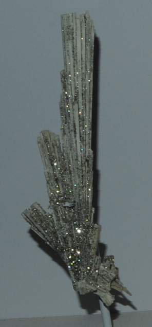

|

| Na2ZrSi6O15.3H2O
This sample of elpidite is displayed in the Smithsonian Museum of Natural History. Elpidite is a silicate mineral of zirconium with the composition Na2ZrSi6O15.3H2O. The sample at left is about 1x12 cm and is from Mont Saint-Hilaire, Quebec, Canada. The sample is described as elpidite with pyrite, the pyrite forming the reflective flakes on the sample.
Mindat: Elpidite
|